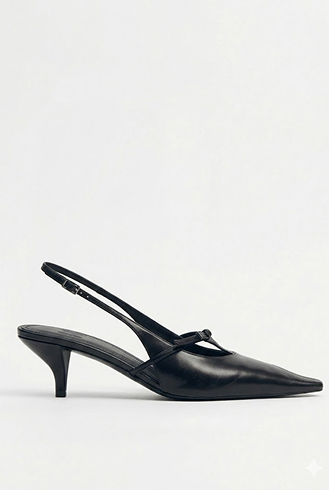
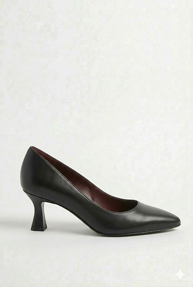
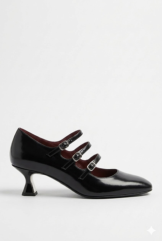
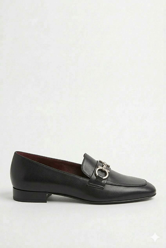
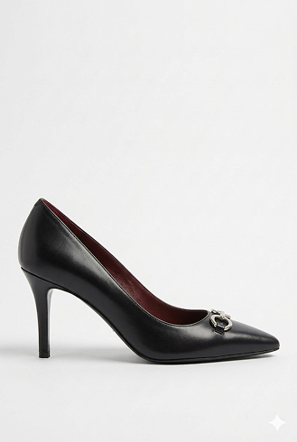

많이 찾는 제품
제품 설명
sienna 37
브랜드의 아이덴티티를 담은 시그니처 라인으로, 절제된 곡선과 완벽한 비율의 힐이 돋보이는 펌프스
| 사이즈 선택 가이드 | 정사이즈 선택 권장 |
|---|---|
| 겉감 | 풀 그레인 나파 가죽 |
| 안감 | 천연 양피 |
| 사이즈 | 225mm ~ 255mm |
| 굽 높이 | 5cm |
| 색상 | Noir Black |
| 제조국 | 대한민국 |
리뷰
sienna 37
2026년 3월 15일

인생 펌프스를 만났어요



평소 발볼이 넓은 편이라 스틸레토 힐은 늘 포기했었는데, 시에나 37은 정말 다르네요. 처음 신었을 때 가죽이 발을 쫀득하게 감싸주는 느낌이 너무 좋았고, 7cm라는 게 믿기지 않을 정도로 무게 중심이 안정적이에요. 중요한 미팅이 있는 날 8시간 정도 신고 돌아다녔는데도 발바닥 통증이 거의 없어서 놀랐습니다. 앞코 라인이 정말 세련되게 빠져서 슬랙스나 스커트 어디에 매치해도 착장이 확 살아나요. 비싼 가격만큼 값어치를 하는 구두입니다. 베이지 컬러로 하나 더 쟁여둘 예정이에요! 고민하시는 분들, 정사이즈로 가시고 발볼 있으시면 꼭 발볼 넓힘 옵션 추가하세요!
Minimalist_Jake
2026년 3월 18일
예술적인 실루엣, 실물이 훨씬 고급스러워요

인스타그램에서 보고 반해서 한 달 동안 고민하다 샀는데, 고민은 배송만 늦출 뿐이었네요. 딥 아이보리 컬러가 자칫하면 촌스러울 수 있는데 이건 정말 우유빛 섞인 차분한 베이지라 너무 고급져요. 특히 옆에서 봤을 때 뒤꿈치부터 힐로 이어지는 라인이 예술입니다. 친구들이 다 어디 거냐고 물어봐서 괜히 뿌듯했어요. 5cm 굽으로 선택했더니 격식은 차리면서 운동화만큼 편해서 데이트할 때 전용 슈즈가 될 것 같습니다. 역시 디자이너 브랜드는 라스트부터가 다르네요.
Espresso_Holic
2026년 3월 21일
첫 인상을 결정짓는 완벽한 파트너입니다

직업 특성상 중요한 비즈니스 미팅과 강연이 많아 신발의 품격을 중요하게 생각합니다. 시에나 37은 과하지 않으면서도 신뢰감을 주는 묵직한 우아함이 있어요. 특히 미드나잇 네비 컬러는 블랙보다 훨씬 세련되어 보이고, 수트나 정장 원피스에 매치했을 때 전문가다운 분위기를 완성해 줍니다. 7cm임에도 불구하고 아치 부분을 탄탄하게 받쳐주어 하루 종일 서 있어도 피로도가 현저히 낮습니다. 단순히 예쁜 신발을 넘어, 자신감을 불어넣어 주는 '갑옷' 같은 신발이에요. 전문적인 무드를 원하는 분들께 강력히 추천합니다